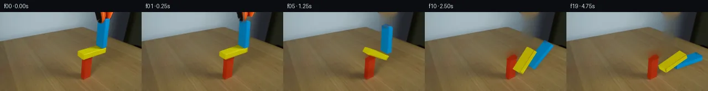

![首帧]()

Round 00
2026-11-05T19:11:41.795253+00:00像素候选变化代码 +418/−0inspection 更新
pixels f9a87e9e533e5423 · code 0564d18afa10a744
查看本轮 generate.py 真实 diff
--- previous/generate.py
+++ current/generate.py
@@ -0,0 +1,418 @@
+"""Local numeric image reconstruction and an in-process rigid-body pixel animation.
+No external renderer, physics engine, reference imagery, or image-viewing tool.
+"""
+from pathlib import Path
+import json
+import math
+import numpy as np
+from PIL import Image, ImageDraw, ImageFilter
+from scipy.ndimage import distance_transform_edt, gaussian_filter, map_coordinates
+from artifact_io import save
+
+ROOT = Path(__file__).resolve().parent
+W, H, SCALE = 256, 144, 4
+SOURCE = np.array(Image.open(ROOT / 'first_frame.png').convert('RGB'))
+RNG = np.random.default_rng(181)
+
+
+def polygon_mask(points):
+ im = Image.new('L', (W, H))
+ ImageDraw.Draw(im).polygon([tuple(p) for p in points], fill=255)
+ return np.array(im) > 0
+
+
+YELLOW_OUTLINE = [(140,71),(172,59),(180,58),(193,64),(192,73),(153,88),(139,79)]
+BLUE_OUTLINE = [(176,17),(187,7),(199,13),(194,62),(185,67),(173,60)]
+TOOL_OUTLINE = [(173,0),(205,0),(205,8),(198,18),(190,23),(179,22),(174,14)]
+
+
+def reconstruct_background():
+ mask = polygon_mask(YELLOW_OUTLINE) | polygon_mask(BLUE_OUTLINE) | polygon_mask(TOOL_OUTLINE)
+ # A one-pixel border removes antialiased saturated color fringes.
+ from scipy.ndimage import binary_dilation
+ mask = binary_dilation(mask, iterations=1)
+ yy, xx = np.indices((H,W))
+ # Do not erase any of the red support's exposed vertical faces.
+ red = (SOURCE[:,:,0]>125)&(SOURCE[:,:,1]<65)&(yy>82)&(xx<168)
+ mask[red] = False
+ _, inds = distance_transform_edt(mask, return_indices=True)
+ bg = SOURCE[tuple(inds)].astype(float)
+ for _ in range(450):
+ avg = (np.roll(bg,1,0)+np.roll(bg,-1,0)+np.roll(bg,1,1)+np.roll(bg,-1,1))*0.25
+ bg[mask] = avg[mask]
+ # Texture in reconstructed tabletop pixels comes from this same image.
+ sample = SOURCE[yy, np.maximum(0,xx-65)].astype(float)
+ grain = sample - gaussian_filter(sample,(1.2,1.2,0))
+ table = mask & (yy > (.47*xx-47)) & (yy>30)
+ bg[table] += grain[table]*0.8
+ return np.clip(bg,0,255).astype(np.uint8), mask
+
+
+BG, VACATED = reconstruct_background()
+
+
+class Body:
+ def __init__(self,name,center,half,mass):
+ self.name=name
+ self.p=np.array(center,dtype=float) # v,z plane; z points up
+ self.half=np.array(half,dtype=float)
+ self.vel=np.zeros(2)
+ self.angle=0.0
+ self.omega=0.0
+ self.inv=1.0/mass if mass else 0.0
+ self.inertia=mass*(4*self.half[0]**2+4*self.half[1]**2)/12 if mass else math.inf
+ self.ii=1/self.inertia
+ def rotation(self):
+ c,s=math.cos(self.angle),math.sin(self.angle)
+ return np.array([[c,-s],[s,c]])
+ def vertices(self):
+ h=self.half
+ return np.array([[-h[0],-h[1]],[h[0],-h[1]],[h[0],h[1]],[-h[0],h[1]]])@self.rotation().T+self.p
+ def point_velocity(self,p):
+ r=p-self.p
+ return self.vel+self.omega*np.array([-r[1],r[0]])
+ def impulse(self,j,p):
+ self.vel+=j*self.inv
+ self.omega+=np.cross(p-self.p,j)*self.ii
+
+
+def clip_polygon(poly, axis, bound, keep_greater):
+ if len(poly)==0:return []
+ result=[]
+ prev=poly[-1]
+ dp=float(np.dot(prev,axis)-bound)
+ inside_prev=dp>=-1e-7 if keep_greater else dp<=1e-7
+ for curr in poly:
+ dc=float(np.dot(curr,axis)-bound)
+ inside_curr=dc>=-1e-7 if keep_greater else dc<=1e-7
… diff truncated; 331 more lines …